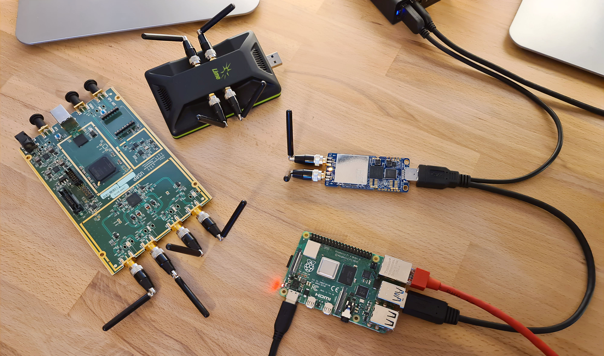

树莓派 4 上的 srsRAN 4G
简介
srsRAN 4G 是 4G 和 5G 软件无线电套件。 4G LTE 系统包括核心网络和 eNodeB。 srsRAN 4G 社区中的大多数人在高性能计算机上运行该软件，但 eNodeB 也可以在具有各种 SDR 的低功耗 Raspberry Pi 4 上运行。
超低成本、低功耗、开源SDR LTE femtocell的概念让很多人兴奋不已！

注意事项
虽然并非不可能，但由于同步和盲信号解码的处理要求增加，在小型嵌入式设备上运行 srsUE 更加困难。
Pi4 eNodeB 硬件要求
下面提供的设置说明已经过测试 树莓派 4B /4GB 修订版 1.2。尚未使用 rev 1.1 主板、具有 2GB RAM 的主板或替代操作系统进行测试。 Ubuntu镜像可以从官方下载 Ubuntu网站。您可以直观地识别您的 Pi4 硬件版本 – 来自 Cytron 的文档 向您展示如何操作。
该设置已使用 USRP B210、LimeSDR-USB 和 LimeSDR-Mini 进行了测试。
注意事项
使用 USRP B210 时，您可以使用 srsenb 创建 2x2 MIMO 单元。也可以在 Pi 上运行 srsEPC 核心网络。
使用任一 LimeSDR 时，您只能使用 srsenb 创建 1x1 SISO 单元。核心网络必须运行在单独的设备上。
由于 SDR 的电源要求，您必须使用外部电源。这可以通过“Y”形电缆来实现，如下所示：

软件设置
在撰写本应用说明时，它已在 Ubuntu Server 20.04 LTS aarch64 映像之上使用 srsLTE 19.12 版本进行了测试。 以下安装说明将适用于此配置。在文档的末尾，有一些关于如何在最新的 Ubuntu Server 22.04 LTS aarch64 映像上安装最新的 srsRAN 4G 版本的注释。
首先是安装 SDR 驱动程序并构建 srsRAN 4G。 USRP 需要 UHD 驱动程序，LimeSDR 需要 SoapySDR/LimeSuite。
须藤 适合 更新
须藤 适合 升级
须藤 适合 安装 cmake
超高清驱动程序 可以安装：
须藤 适合 安装 利布德-开发者 libuhd3.15.0 超高清-主机
须藤 /使用者/库/超高清/实用程序/uhd_images_downloader.py
## 然后输入以下命令测试连接：
须藤 uhd_usrp_probe
肥皂SDR 和 石灰套件 可以安装：
git 克隆 https://github.com/陶瓷器皿/肥皂SDR.git
光盘 肥皂SDR
git 结账 标签/肥皂味的-特别提款权-0.7.2
目录 建造 && 光盘 建造
cmake ..
使 -j4
须藤 使 安装
须藤 LD配置
须藤 适合 安装 libusb-1.0-0-开发者
git 克隆 https://github.com/无数的/石灰套件.git
光盘 石灰套件
git 结账 标签/v20.01.0
目录 构建目录 && 光盘 构建目录
cmake ../
使 -j4
须藤 使 安装
须藤 LD配置
光盘 ..
光盘 乌德夫-规则
须藤 ./安装.嘘
## 然后输入以下命令测试连接：
石灰工具 --找到
石灰工具 --更新
SoapySDRUtil --找到
接下来， srsRAN 可以编译为：
须藤 适合 安装 libfftw3-开发者 libmbedtls-开发者 libboost-节目-选项-开发者 库配置++-开发者 库文件-开发者
git 克隆 https://github.com/srsRAN/srsRAN_4G.git
光盘 srsRAN_4G
git 结账 标签/发布_19_12
目录 建造 && 光盘 建造
cmake ../
使 -j4
须藤 使 安装
须藤 LD配置
## 将配置复制到/root
须藤 ./srsran_4g_install_configs.嘘 用户
最后，修改 Pi CPU 缩放_调节器 确保它在性能模式下运行：
须藤 系统控制 禁用 点播
须藤 适合 安装 操作系统-工具-拉斯皮
须藤 纳米 /等/默认/cpu频率工具
* 插入:
* 总督=「表现」
## 重新启动
须藤 中央处理器功率 频率-信息
* 应该 显示 那个 的 中央处理器 是 跑步 在 表现 模式, 在 最大 时钟 速度
Pi4 eNodeB 配置
在测试过程中，以下 eNodeB 配置选项已被证明在与 USRP B210 一起运行时稳定 24 小时以上，在与 LimeSDR 一起运行时稳定 2 小时以上，因此对您来说应该是一个很好的起点。
Pi4 eNodeB 已在 LTE B3（1800MHz 频段）中使用 3MHz 宽单元进行测试，DL=1878.40 UL=1783.40。它位于英国新的“1800MHz 共享接入频段”内，您可以合法地获得低成本、 Ofcom 的低功耗共享接入频谱许可证 如果您在英国工作。
更改默认 enb.conf USRP B210:
须藤 纳米 /根/.配置/srsran_4g/恩布.会议
[恩布]
MCC = <你的MCC>
跨国公司 = <你的跨国公司>
内存地址 = 127.0.1.100 ## 或外部 MME 的 IP，例如。 192.168.1.10
gtp_bind_地址 = 127.0.1.1 ## 或外部 S1-U 的本地接口 IP，例如。 192.168.1.3
s1c_bind_addr = 127.0.1.1 ## 或外部 S1-MME 的本地接口 IP，例如。 192.168.1.3
n_prb = 15
TM = 2
nof_端口 = 2
[射频]
dl_earfcn = 1934
发送增益 = 80 ## 这个能力似乎效果最好
接收增益 = 40
设备名称 = 超高清
设备参数 = 汽车 ## 不适用于“auto”以外的任何内容
更改默认 enb.conf LimeSDR-USB 或 LimeSDR-Mini:
须藤 纳米 /根/.配置/srsran_4g/恩布.会议
[恩布]
MCC = <你的MCC>
跨国公司 = <你的跨国公司>
内存地址 = <ip地址> ## 外部 MME 的 IP，例如。 192.168.1.10
gtp_bind_地址 = <ip地址> ## 外部 S1-U 的本地接口 IP，例如。 192.168.1.3
s1c_bind_addr = <ip地址> ## 外部S1-MME的本地接口IP，例如。 192.168.1.3
n_prb = 15
TM = 1
nof_端口 = 1
[射频]
dl_earfcn = 1934
发送增益 = 60 ## 这个能力似乎效果最好
接收增益 = 40
设备名称 = 肥皂味的
设备参数 = 汽车 ## 不适用于“auto”以外的任何内容
srsEPC 核心网络默认配置的更改：
须藤 纳米 /根/.配置/srsran_4g/EPC.会议
[嗯]
MCC = <你的MCC>
跨国公司 = <你的跨国公司>
mme_bind_地址 = 127.0.1.100 ## 或外部 S1-MME 的本地接口 IP，例如。 192.168.1.10
须藤 纳米 /根/.配置/srsran_4g/用户数据库.数据集
* 添加 详情 的 你的 SIM卡 卡片
注意事项
在外部设备（例如另一个 Pi）上运行 srsEPC 时，您必须打开传入防火墙端口以允许来自 srsENB 的 S1-MME 和 S1-U 连接。
S1-MME = sctp，端口 36412 || S1-U = udp，端口 2152
如果使用 iptables，
须藤 iptables -一个 输入 -p sctp -米 sctp --数据端口 36412 -j 接受
须藤 iptables -一个 输入 -p UDP协议 -米 UDP协议 --数据端口 2152 -j 接受
运行 Pi4 eNodeB
在单独的 ssh 窗口中或使用 screen 启动软件。请记住为 SDR 使用外部电源。第一次运行 srsENB 软件时，您需要等待几分钟才能完成设置。第一次之后它将立即开始。
启动 Pi4 eNodeB：
须藤 斯尔森布 /根/.配置/srsran_4g/恩布.会议
注意事项
在使用 LimeSDR-USB 运行期间，您有时需要物理拔下并重新连接 SDR 以重新启动它。
启动核心网络（在单独的设备上，或使用 USRP B210 时在 Pi4 eNodeB 上）：
须藤 SRSEPC /根/.配置/srsran_4g/EPC.会议
须藤 /使用者/本地的/垃圾箱/srsepc_if_masq.嘘 以太网0
以下 htop 屏幕截图显示了在 Pi 4B /4GB RAM 上运行软件时的资源利用率，其中 x2 UE 连接到 USRP B210 单元。 srsRAN 4G软件在这里运行了18个小时以上，没有出现任何问题。仅使用了一半的 RAM，CPU 核心的利用率约为 25%。因此，该软件配置有可能适用于 Pi 4B /2GB RAM 版本，也可能适用于其他最新的基于 Arm 的开发板。如果您可以获得适用于替代硬件的工作单元，请告知 srsran-users 邮件列表！

已知问题
对于高于 6 PRB 的带宽，建议使用 srsRAN 4G 19.12 而不是最新版本 20.04。我们已经确定 PRACH 处理中的问题主要影响低功耗设备。该修复将包含在即将发布的版本中。
在 Ubuntu 22.04 LTS 上运行
从版本 22.10 开始，srsRAN 4G 无需修改即可在 Ubuntu 22.04 LTS 上编译。但是，新的 Ubuntu 22.04 LTS 映像在内核配置选项方面略有不同。它还缺少默认配置中的 SCTP 内核模块。后者可以安装：
须藤 适合-得到 安装 操作系统-模块-额外的-拉斯皮
成功通过所有测试所需的第二个更改是增加 RLIMIT_MEMLOCK 设置在 /etc/security/limits.conf。提供了基本更改的详细描述 这里 以及有关的信息 RLIMIT_MEMLOCK 可以找到 这里。要解除限制，请将以下行添加到 /etc/security/limits.conf.
* - 内存锁 无限
通过这些更改，srsRAN 4G 应该可以在 Ubuntu 22.04 LTS aarch64 系统上编译并通过所有测试。